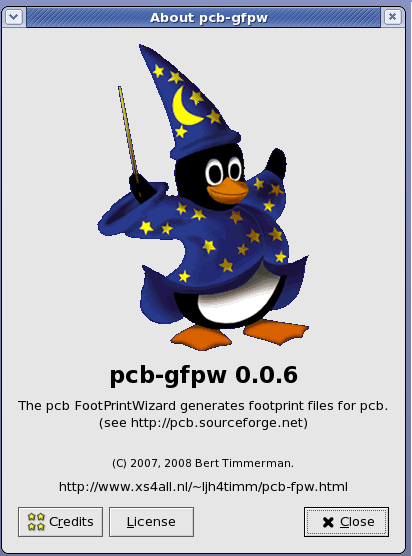

pcb-gfpw User Manual.
Intended usage.
The pcb-fpw FootPrintWizard is what the name says it will be:
a footprint wizard (a.k.a. footprint generator).
pcb-fpw is not a footprint editor, therefor one can NOT load an existing
footprint file into pcb-gfpw, make some changes and save it back to file, and
subsequent load the edited footprint file into pcb.
The usage of pcb-gfpw comes down to the following:
- Startup the application,
- Fill the apropriate entries in:
- The "Footprint" tab,
- The "Pins/pads" tab,
- The "Thermal pad" tab,
- The "Silkscreen" tab,
- The "Heel & Toe goals" tab,
- Check the footprint in the preview widget (when and if this is implemented)
by pressing the "Refresh" button,
- Save the footprint file by pressing the "Save" button.
Starting up.
During the startup of the application an "About pcb-gfpw" dialog appears,
shortly followed by the "main window".

The "About pcb-gfpw" dialog contains the following buttons:
- The "Credits" button: clicking this button raises a popup dialog in
which the names of the authors or translators are given (select the tab of your
choice).
- The "License" button: clicking this button raises a popup dialog in
which a message about the license is given.
- The "Close" button: clicking this button closes the "About pcb-gfpw"
dialog.
The "main window".
The main window of the program consists of five tabs with entry fields and a
preview drawing area (when and if implemented), and a button bar with five
buttons on the lower part of the window.
The titlebar shows the name of a saved footprintwizard file or the text
"Unsaved fpw file" if no file has been saved.
An asterisk between brackets "[*]" is shown when the contents of any entry or
the state of any checkbutton are changed and no saving has occurred.
The "Footprint" tab.

The first tab with entries is named "Footprint" and can be used for the
input of general information about the footprint.
- At the entry named "Type" the footprint type is entered by
selecting a footprint type from a list, the program will guess for the prefix
of the footprint as the first couple of characters of the footprint name.
The pcb-fpw program will try to guess which entries are needed for this
footprint type and "grey out" the entries and checkbuttons which it thinks are
not needed.
Note: the footprint types follow a "well known and standard" footprint
naming convention.
Disclaimer: only this part of the "well known and standard" naming convention
is used.
The actual data for creating footprints relies on vendor specific
datasheets (both method and content).
- The entry named "Name" will contain the name that the actual
footprint file will get when the footprint is saved to disk.
Add characters here to complete the footprint name.
If the footprint name contains additional characters , changing the footprint
type will not update the prefix from the "Type" entry.
The footprint name should be entered without the ".fp" suffix.
Note: this is a mandatory entry, leaving this entry empty or filled with a non
valid footprint name will NOT result in a footprint file when the
"Save" button is clicked.
- In the entry named "Units" the units for the footprint dimensions
can be selected.
Currently only "mil/100", "mil" and "mm" are supported.
pcb-fpw will apply the chosen unit type for all dimensions entered in the
following entries.
Changing the units type will not change the following entries
automagickly, that is: if you switch the units type halfway the entries, you
will have to do the math yourself.
Note: this is a mandatory field, leaving this entry empty or filled with a non
valid unit type will NOT result in a footprint file when the
"Save" button is clicked.
- The "Refdes prefix" entry can be used to add an optional reference
designator prefix to the footprint.
Note: the prefix must be entered without the question mark "?".
Example: "R" for a resistor.
- The "Value" entry can be used to add an optional value to the
footprint.
Example: "100k" for the resistor mentioned above.
- The "Body length (X)" entry is used for entering the length of the
package in the X-direction.
Note: this dimension is used for the silkscreen artwork when this is
checked on the fourth tab "Silkscreen".
- The "Body width (Y)" entry is used for entering the width of the
package in the Y-direction.
Note: this dimension is used for the silkscreen artwork when this is
checked on the fourth tab "Silkscreen".
- The "Body heigth (Z)" entry is used for entering the heigth of the
package in the Z-direction.
Note: this dimension is NOT used for the silkscreen artwork when this is
checked on the fourth tab "Silkscreen".
This dimension entry is here for future use of the height attribute of a
package.
- The "Radial package" checkbutton can be used to indicate whether the
package has a circular outline as opposed to a rectangular outline.
Note: the default value for a package outline is a rectagular package for any
undefined package types entered in the "Type" entry and this checkbutton
not to be checked.
In all cases defined package types entered in the "Type" entry, pcb-fpw
follows the design rules for this package type.
- The "Add attributes to footprint" checkbutton can be used to include
all values in the entries, and the state of all check and toggle buttons as
attributes in the footprint file.
This is to allow for future reference, Design Rule Checking and whatever other
future purpose you can think of.
Now follow some entries about the "Author" and licensing of the
footprint file.
- The "Author" entry can optionally contain your name and/or e-mail
address.
- The "Distribution license" entry can be used to refer to the license under
which the footprint is released.
As pcb-fpw comes under the GPL this is a default value which can be changed as
required.
- The "Use license" entry can be used to specify the usage under which the
footprint may be used.
The default value is "unlimited" which can be changed, as required, to whatever
restrictions you want to impose on the usage.
Examples: "commercial", "non-commercial", "personal", ...
- The "Status" entry can be used to specify the status of
the footprint.
Predefined choices are: "Experimental", "Private (not published)",
"Public (released)", "Confirmed by peers (stable)", ...
and whatever other status you can think of.
The "Pins/Pads" tab.

The second tab is named "Pins/Pads" and should be used for the input of
information about the number and pattern of pins and/or pads, the shape and
clearances.
The first group of entries is for defining a "Pattern" of pins and/or
pads.
- The "Total Pins and Pads" entry is used for displaying the total
amount of pins and pads entered in other entries.
It is "greyed out" most of the time, and could have been a label widget as
well.
- The "Columns" entry is used for entering the number of columns of
pins/pads in a footprint.
Example: the number of columns in a "PLCC" package is 2.
- The "Rows" entry is used for entering the number of rows of
pins/pads in a footprint.
Example: the number of rows in a "PLCC" package is 2.
- The "Pitch X-direction" entry is used for entering the pitch of the
pins/pads in the X-direction.
Example: the pitch in the X-direction (as in a row) for a "PLCC" package is
1.27 mm or 50 mil.
- The "Pitch Y-direction" entry is used for entering the pitch of the
pins/pads in the Y-direction.
Example: the pitch in the Y-direction (as in a column) for a "PGA" package is
2.54 mm or 100 mil.
- The "Count X-direction" entry is used for entering the number of
pins/pads on a row (the X-direction).
- The "Count Y-direction" entry is used for entering the number of
pins/pads on a column (the Y-direction).
- The "Pin/pads #1 position" entry is used for entering the location
of the #1 pin and/or pad of the package.
It contains pre-defined positions.
The second group of entries "Pins" is used for the dimensions of
pins (only).
- The "Pin pad diameter (D)" entry is used for entering the outer
diameter of the annulus of the pin.
- The "Pin drill diameter (d)" entry is used for entering the inner
diameter of the annulus of the pin.
This is also known as the drill diameter.
- The "Pin #1 square" check button is used for selecting a round or a
square #1 pin.
The last group of entries "Pads" is used for the dimensions of
pads (only).
- The "Pad shape" entry is used for selecting the shape of the
pad.
It contains pre-defined pad shapes.
- The "Pad length (X)" entry is used for entering the length of the
pad (in the X-direction).
- The "Pad width (Y)" entry is used for entering the width of the pad
(in the Y-direction).
- The "Pad clearance" entry is used for entering the clearance between
the pad and other (conductive) copper traces or (polygon) surfaces.
- The "Pad solder mask clearance" entry is used for entering the
distance between the pad (copper) and the solder mask (solder resist).
The "Thermal pad" tab.

The third tab is named "Thermal pad" and can be used for an optional thermal
pad if the footprint type allows for such an option.
- The "Thermal pad" check button is used for selecting or deselecting
a thermal pad on the footprint.
- The "No paste on pad" check button is used for selecting paste or no
paste on the thermal pad of the footprint.
- The "Pad length (X)" entry is used for entering the length of the
thermal pad (in the X-direction).
- The "Pad width (Y)" entry is used for entering the width of the
thermal pad (in the Y-direction).
- The "Pad clearance" entry is used for entering the clearance between
the thermal pad and other (conductive) copper traces or (polygon) surfaces.
- The "Pad solder mask clearance" entry is used for entering the
distance between the thermal pad (copper) and the solder mask (solder
resist).
The "Silkscreen" tab.

The fourth tab is named "Silkscreen" and can be used for the input of an
optional silkscreen to be drawn, such as package outline, pin/pad #1 marker
and/or courtyard.
The first group of entries "Package" is used for the drawing of a
artwork on the silkscreen.
- The "Print package outline" check button is used for selecting or
deselecting whether the footprint contains a package outline.
- The "Pad #1 indicator" check button is used for selecting or
deselecting whether the footprint contains a pin #1 indicator.
- The "Line width" entry is used for entering the width of the
thermal pad (in the Y-direction).
The "Heel & Toe goals" tab.

The fifth and last tab is named "Heel & Toe goals".
This tab is for the input of heel and toe parameters to allow for the creation
of PLCC, SO, QFN or QFP packages.
The first group of entries "Top to Bottom" is used for entering the
distance between the top and bottom rows of pads.
- The "Inner-Inner (G1)" check button is used for activating the
"inner-inner" distance entry. This is also known as the "Heel to Heel"
distance.
- The "Center-Center (C1)" check button is used for activating the
"center-center" distance entry.
- The "Outer-Outer (Z1)" check button is used for activating the
"outer-outer" distance entry. This is also known as the "Toe to Toe"
distance.
The second group of entries "Left to Right" is used for entering the
distance between the left and right columns of pads.
- The "Inner-Inner (G2)" check button is used for activating the
"inner-inner" distance entry. This is also known as the "Heel to Heel"
distance.
- The "Center-Center (C2)" check button is used for activating the
"center-center" distance entry.
- The "Outer-Outer (Z2)" check button is used for activating the
"outer-outer" distance entry. This is also known as the "Toe to Toe"
distance.
The buttons.
The five buttons in the lower part will have the following functions:
- "Close": to exit the application,
- "Clear": to empty all entry fields and reset all checkbuttons to the
default setting,
- "Open": to choose and read an existing footprintwizard file,
- "Save": to write the current values in the entries to a
footprintwizard file and to generate a footprint file,
- "Refresh": to refresh the preview area (when and if
implemented).
Last update: April 30th, 2008 by Bert Timmerman.